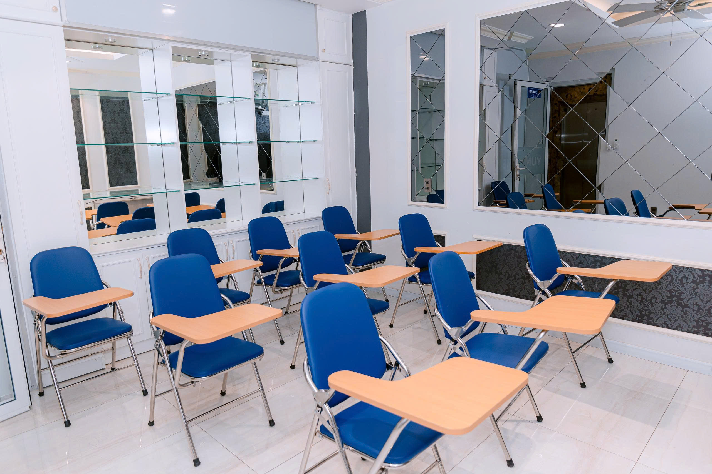

Giáo viên trẻ, tận tâm
Giảng dạy trên 50% tiếng Nhật, luôn truyền cảm hứng và hỗ trợ tận tình.

Đang tải Yume Academy...
Yume Academy mang tâm huyết kiến tạo một thế hệ nhân tài toàn diện – không chỉ tự tin giao tiếp tiếng Nhật ứng dụng thực tế, mà còn có kiến thức, kỹ năng và tư duy chuyên nghiệp tại doanh nghiệp Nhật Bản. Qua đó góp phần phát triển nguồn nhân lực chất lượng cao cho cộng đồng địa phương tại Biên Hòa.
Chúng tôi tin rằng học tiếng Nhật không chỉ để thi JLPT, mà là để áp dụng, phát triển và trở thành nhân tài góp phần xây dựng Việt Nam trong kỷ nguyên mới.
Yume Academy hướng đến trở thành Trung Tâm Nhật Ngữ uy tín hàng đầu tại Biên Hòa, nơi học viên được học hoàn toàn bằng tiếng Nhật theo phương pháp Brainstorming kết hợp ngôn ngữ cơ thể, phát triển tư duy – kỹ năng – giao tiếp tự tin thông qua chương trình đào tạo toàn diện và các lớp giao lưu cuối tuần bằng tiếng Nhật.
“Một chương trình đào tạo chuẩn mực có thể thay đổi chất lượng nguồn nhân lực của cả một địa phương.”
Hãy đến với chúng tôi, nơi “Đào tạo bằng trái tim – Đào tạo từ trái tim” , Với chính sách cam kết chất lượng đầu ra, theo dỏi năng lực từng học viên để tư vấn, định hướng và đào tạo thực hành bổ sung cho đến khi Bạn đạt được mục tiêu học tập thực sự nói trên.
Giảng dạy trên 50% tiếng Nhật, luôn truyền cảm hứng và hỗ trợ tận tình.
Lớp học tương tác trên 50%, áp dụng kỹ thuật học chủ động và phản xạ ngôn ngữ.
Đảm bảo trình độ và kết quả học tập cho mọi học viên sau khóa học.
Không gian sạch đẹp, thiết bị học tập tiện nghi, môi trường thân thiện.
Giảm giá và quà tặng hấp dẫn khi đăng ký sớm khóa học.

